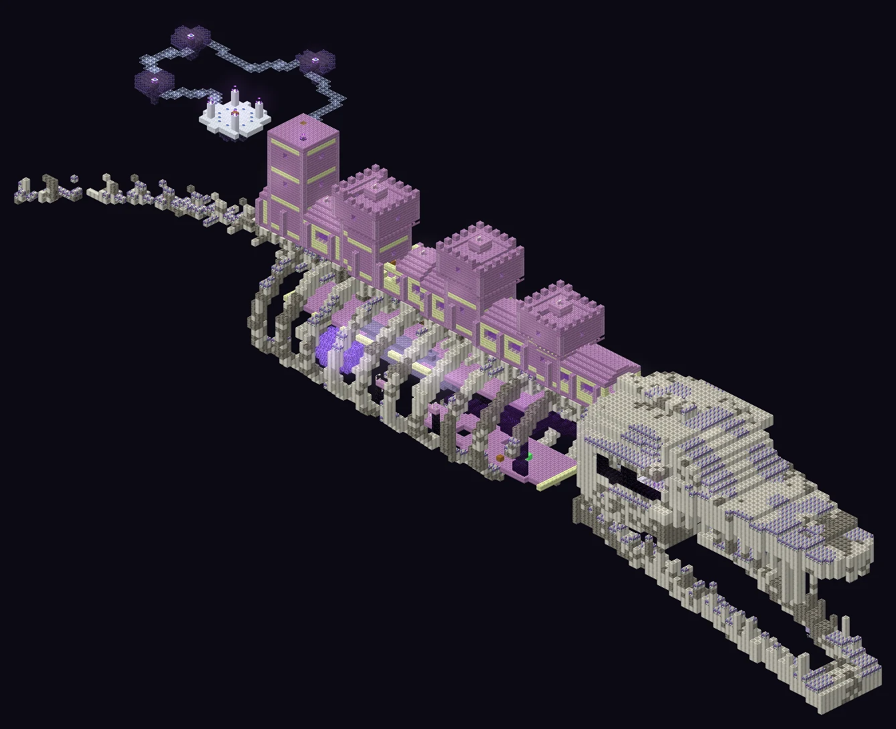
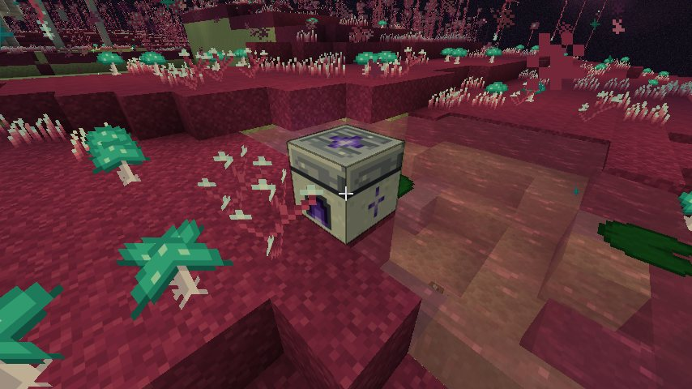
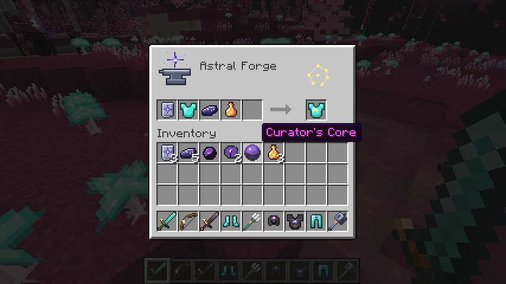
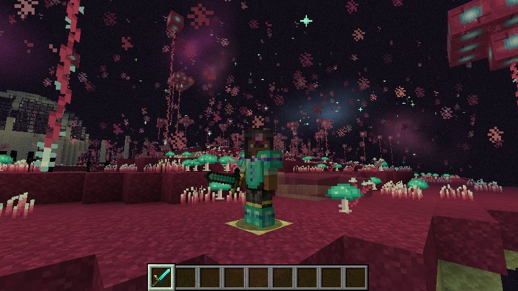
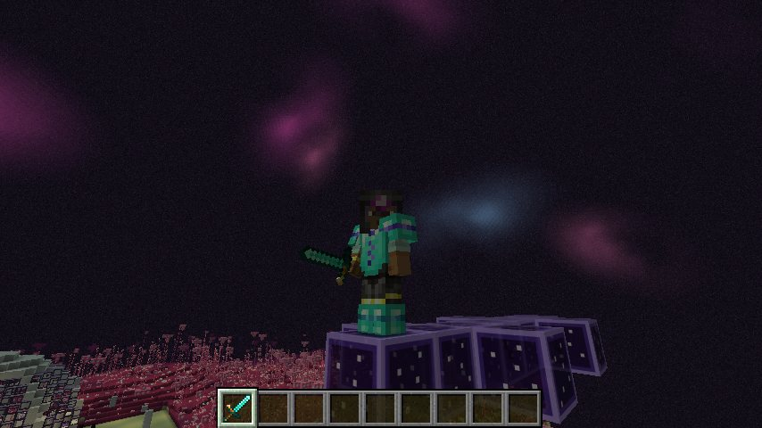

The outer End, filled in. Five biomes and three hidden places, eight creatures that live with each other, a 200-block Leviathan skeleton with a Curator inside, and a forge for the gear you bring back. Every cut-out on this page is built from a real world the mod generates in its test runs.

Who hunts whom, who hides from whom, who helps and who plays. Every thread here is in the game and checked by the mod's test runs. Pick a creature to follow its threads.
The Gilded Reach's star flares, the sky turns gold and the light burns. Everything alive takes cover.
A 64-block piece of each, cut out of the world. The Gilded Reach is rare; the Shattered Crags are a variant of the Glimmering Crags; the Hollow Roots and the Crystal Vaults are caves, cut open so you can look in.
Eight creatures, the Hollowback (a Hushback the Leviathan's builders hollowed out), and the Curator, the mini-boss. Each model is drawn from the mod's own model and texture.
The Leviathan is the heart of it: its skull, its reliquary, the Curator, and the Constellation Maze on its last tower. The rest are landmarks with something to find.
The late game. Five upgrades, one per item, none simply better than another: the choice is which goes where. Each shows on the tooltip like an enchantment, leaves a colour accent on the item, and stacks with enchantments.




| Upgrade | Goes on | What it does | Material | Constellation |
|---|
Things worth knowing before you go out.